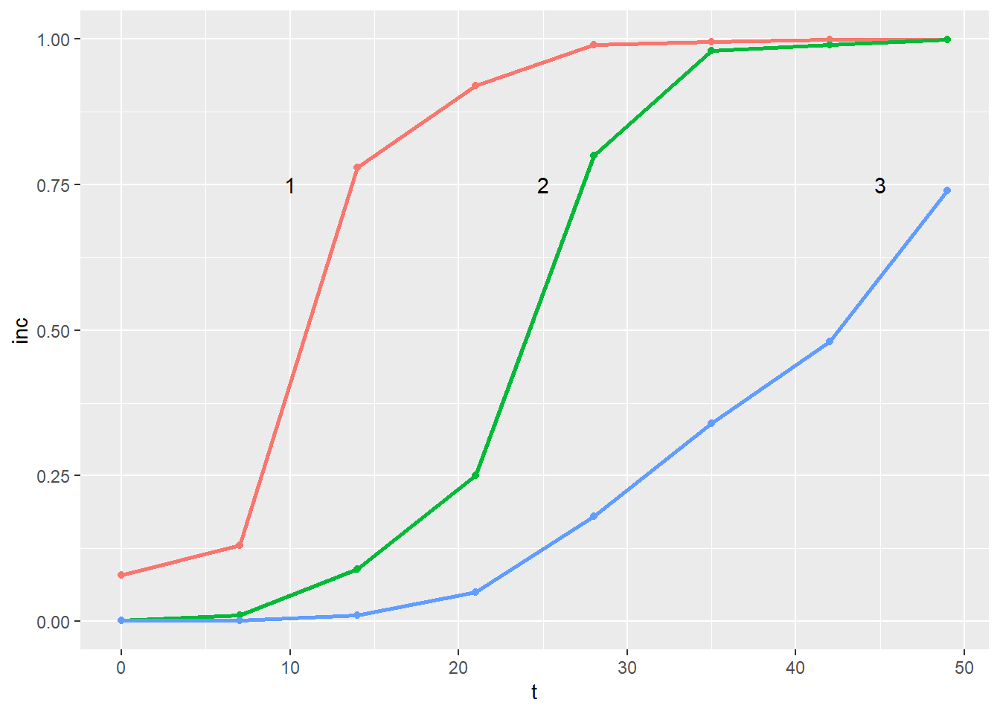
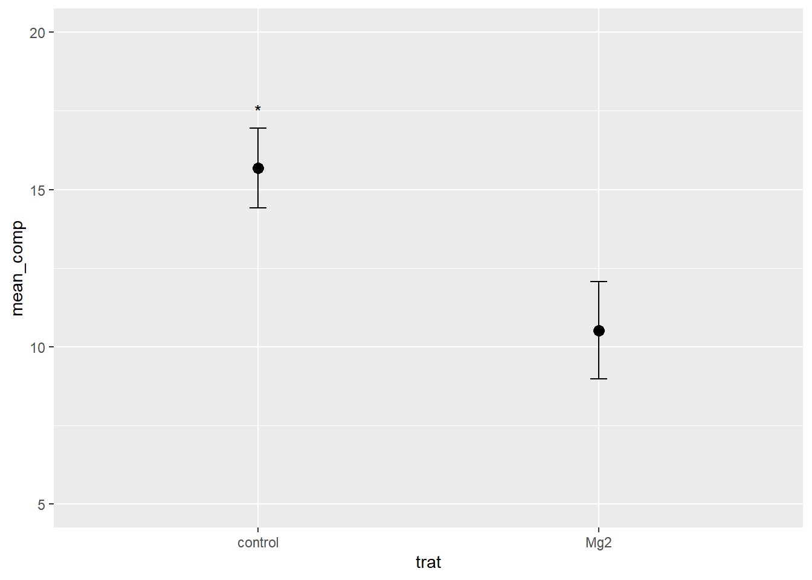

library(tidyverse)
library(janitor)
library(ggthemes)
library(gsheet)Aula 4
Pacotes
Os pacotes necessários neste documento seguem abaixo. Dentre os pacotes carregados, há um que ainda não foi utilizado, o pacote janitor. O janitor é um pacote que possui funções destinadas a limpar base de dados, por exemplo, para nomes de colunas muito complexos, ele os transforma para um formato mais simplificado. Para entender mais sobre o pacote e suas funções clique aqui.
Instalando pacotes de outros repositórios
As vezes é preciso carregar pacotes que não estão disponíveis no repósitório CRAN e utilizando a função “install.packages()” não será possível instalá-los. Para resolver isso, pode-se fazer uso de outro instalador como se segue:
#install.packages('pak') # pacote utilizador para instalar pacotes de outros repositórios
#pak::pkg_install('Icens')
#pak::pkg_install('emdelponte/r4pde')Primeiramente, instala-se o pacote pak utilizando a função “install.packages()”. Em seguida, com a função “pkg_install()”, instala-se pacotes de outros repositórios, a exemplo, do GitHub.
Colagem de dados
Outra ferramenta muito útil para lidar com colagem de dados diretamente no código, é instalando o pacote datapasta. Esse pacote oferece funcionalidades para colagem de dados de forma organizada junto ao código. Após a instalação, as funcionalidades do pacote ficam disponíveis no canto superior da janela com um botão Addins. Clicando nele, há diversas formas de colagem de dados. Mais informações aqui.
#install.packages('datapasta') # pacote instalado para colagem de dados copiadosImportando banco de dados
Colando um vetor
Selecione o conjunto de dados que se deseja colar, clique na opção Addins, na seção DATAPASTA clique em paste as vactor. Automaticamente, seus dados serão colados dentro da função concatenar (“c()”). Caso queira que a colagem dos dados seja na vertical, há a opção paste as vector (vertical).
comp <- c(9, 125, 10, 8, 132, 11, 108, 95, 108, 104, 1372, 1591, 157, 142, 159, 1654, 18, 144, 1641, 16)Colando um dataframe
Para data frames, a ideia é semelhante. Crie um objeto para receber os dados, selecione os dados que queira colar e na opção Addins clique no botão paste as data.frame.
dat <- data.frame(
stringsAsFactors = FALSE,
trat = c("Mg2","Mg2","Mg2",
"Mg2","Mg2","Mg2","Mg2","Mg2","Mg2","Mg2",
"control","control","control","control",
"control","control","control","control","control",
"control"),
rep = c(1L,2L,3L,4L,5L,
6L,7L,8L,9L,10L,1L,2L,3L,4L,5L,6L,7L,
8L,9L,10L),
comp = c(9,125,10,8,132,
11,108,95,108,104,1372,1591,157,142,159,
1654,18,144,1641,16)
)A tibble
É como um data frame com algumas funcionalidades a mais. Por exemplo, elas não mudam automaticamente os dados das colulas de strings para fatores. Elas podem conter culunas mais complexas como colunas de listas. Uma impressão dos dados que não sobrecarrega o console. Para colagem desse tipo de dados, semelhante ao passo anterior, procure em Addins a opção referente a colagem de tibble.
dat2 <-
tibble::tribble(
~trat, ~rep, ~comp,
"Mg2", 1L, 9,
"Mg2", 2L, 125,
"Mg2", 3L, 10,
"Mg2", 4L, 8,
"Mg2", 5L, 132,
"Mg2", 6L, 11,
"Mg2", 7L, 108,
"Mg2", 8L, 95,
"Mg2", 9L, 108,
"Mg2", 10L, 104,
"control", 1L, 1372,
"control", 2L, 1591,
"control", 3L, 157,
"control", 4L, 142,
"control", 5L, 159,
"control", 6L, 1654,
"control", 7L, 18,
"control", 8L, 144,
"control", 9L, 1641,
"control", 10L, 16
)Colagem de dados de cotação de preço da saca de café de 60Kg do Centro de Comércio de Café de Vitória (CCCV). Os dados abaixo, foram selecionados de uma planilha de um site da web e colado junto ao código utilizando as funcionalidas já descritas do pacote DATAPASTA.
visitas <- tibble::tribble(
~`Dia`, ~`Arábica Tipo 6`, ~`Arábica Tipo 7`, ~`Conilon Tipo 7/8`,
"1", "965,00", "860,00", "813,00",
"2", "-", "-", "-",
"3", "-", "-", "-",
"4", "973,00", "873,00", "822,00",
"5", "964,00", "859,00", "820,00",
"6", "973,00", "861,00", "825,00",
"7", "992,00", "878,00", "850,00",
"8", "985,00", "866,00", "848,00",
"9", "-", "-", "-",
"10", "-", "-", "-",
"11", "967,00", "859,00", "836,00",
"12", "970,00", "863,00", "839,00",
"13", "962,00", "864,00", "839,00",
"14", "965,00", "857,00", "847,00",
"15", "965,00", "856,00", "849,00",
"16", "-", "-", "-",
"17", "-", "-", "-",
"18", "967,00", "859,00", "860,00",
"19", "968,00", "860,00", "861,00",
"20", "968,00", "858,00", "864,00",
"21", "975,00", "864,00", "870,00",
"22", "983,00", "866,00", "873,00",
"23", "-", "-", "-",
"24", "-", "-", "-",
"25", "984,00", "872,00", "876,00",
"26", "991,00", "873,00", "889,00",
"27", "-", "-", "-",
"28", "-", "-", "-",
"29", "-", "-", "-",
"30", "-", "-", "-",
"31", "-", "-", "-",
"Média Mensal", "973,17", "863,78", "848,94"
)Banco de dados do pacote r4pde.
pepper <-
tibble::tribble(
~t, ~`1`, ~`2`, ~`3`,
0, 0.08, 0.001, 0.001,
7, 0.13, 0.01, 0.001,
14, 0.78, 0.09, 0.01,
21, 0.92, 0.25, 0.05,
28, 0.99, 0.8, 0.18,
35, 0.995, 0.98, 0.34,
42, 0.999, 0.99, 0.48,
49, 0.999, 0.999, 0.74
) Transformando o dataframe ‘pepper’ do formato largo para o formato longo utilizando a função pivot_longer() e criando um gráfico com ggplot2 e criando anotações.
pepper |>
pivot_longer(2:4, names_to = 'epidemic',
values_to = 'inc') |>
ggplot(aes(t, inc, color = epidemic)) +
geom_point() +
geom_line(size = 1) +
annotate(geom = 'text',
x = 10,
y = 0.75,
label = '1') +
annotate(geom = 'text',
x = 25,
y = 0.75,
label = '2') +
annotate(geom = 'text',
x = 45,
y = 0.75,
label = '3') +
theme(legend.position = 'none') # elimina a legenda do gráfico
Observe que cada uma das curvas está sendo identificada, além da cor, por um número. A inserção desses números foi feita utilizando a função annotate() do ggplot2. Como se pode obeservar no código, a função requer o preenchimento de alguns argumentos basícos, como posição do texto nos eixos x e y e o texto a ser inserido. Lembrando que no argumento “label =” a informação a ser apresentada no gráfico deve ser digitado entre áspas simples ou duplas (isso é um indicativo de caracter).
Tabela de contingência
Importando banco de dados de ferrugem do cafeeiro em formato .csv da web:
cr <- read_csv("https://raw.githubusercontent.com/emdelponte/paper-coffee-rust-Ethiopia/master/data/survey_clean.csv")Uma maneira interessante para buscar rapidamente um sumário de ocorrência da ferrugem é por meio da função “count()”. Nesse caso, a contagem foi indicada para ser feita dentro de cada uma das zonas de cada região. O valor n retornado indica o número de contagem da zona dentro do banco de dados, resumindo, o número de ocorrências de ferrugem.
cr |>
count(region, zone)# A tibble: 9 × 3
region zone n
<chr> <chr> <int>
1 Oromia Bale 30
2 Oromia Ilu AbaBora 45
3 Oromia Jimma 45
4 Oromia West Wellega 45
5 SNNPR Bench Maji 45
6 SNNPR Gedio 45
7 SNNPR Keffa 45
8 SNNPR Sheka 45
9 SNNPR Sidama 60A função tabyl() do pacote janitor é uma forma rápida de criar uma tabela de frequência. No exemplo a seguir, uma tabela de frequência em função da cultivar e região.
cr |>
tabyl(cultivar, region) cultivar Oromia SNNPR
Improved 23 60
Local 50 66
Mixture 92 114Abaixo, um gráfico de contagem com base no manejo adotado e cultivar utilizada. De maneira simplificada, 100% das áreas com cultivares melhoradas recebem um manejo intensivo. Grande parte da cultivar local não recebe nenhum tipo de manejo da doença. Para áreas onde há a misturas de cultivares, percebe-se que todas possuem pelo menos o manejo definido como mínimo para a ferrugem.
cr |>
count(farm_management, cultivar) |>
ggplot(aes(x = cultivar, y = n, fill = farm_management, label = n)) +
geom_col(position = 'dodge') +
scale_fill_calc() +
theme_bw() +
theme(strip.text.x = element_blank(),
legend.position = 'top') +
geom_text(position = position_dodge(width = 0.9)) +
facet_wrap(~cultivar, scales = 'free_x')
Criando anotações no gráfico
Como já visto anteriormente, é possível inserir texto tipo caracter no gráfico gerado de acordo com o interesse do pesquisador. Nesse exemplo, utilizando outro banco de dados com dois tratamentos e uma variável resposta vamos plotar o valor médio +- o erro padrão. Além dissso, vamos inserir uma anotação “*” como indicativo que um dos tratamentos apresentou diferença significativa. Veja:
mg <- gsheet2tbl("https://docs.google.com/spreadsheets/d/1bq2N19DcZdtax2fQW9OHSGMR0X2__Z9T/edit#gid=983033137 ")
mg |>
group_by(trat) |>
summarise(mean_comp = mean(comp),
sd_comp = sd(comp)) |>
ggplot(aes(trat, mean_comp)) +
#geom_col(fill = 'red', width = 0.5) +
geom_point(size = 3) +
ylim(5, 20) +
geom_errorbar(aes(ymin = mean_comp - sd_comp,
ymax = mean_comp + sd_comp),
width = 0.05) +
annotate(geom = 'text',
x = 'control', y = 17.5,
label = "*"
)